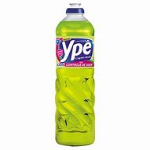

R$ 200
Lava Louças Concentrado Cif Neutro com Camomila Com o Detergente líquido concentrado Cif Neutro com Camomila 420g a rotina diária de lavar as louças vai se tornar muito mais simples, prática e eficiente. Isso porque ele traz uma fórmula inovadora que remove a sujeira e as gorduras mais difíceis sem esforço, além de não deixar resíduos. Sua composição é suave para não agredir ou irritar a pele. A economia também está garantida pois ele possui máximo rendimento e potência em cada gota.